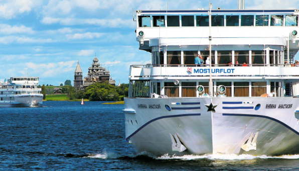

Пресс-служба

Контактная информация
Филимонов Александр Александрович —
руководитель пресс-службы
Электронная почта: Filimonov@mosturflot.ru
Телефон: 8 (916) 794-79-62
Уважаемые коллеги — представители СМИ! В пресс-службе ПАО «Мостурфлот» вы сможете получить необходимую информацию и официальные комментарии, согласовать время проведения интервью, фото-и видеосъемки с представителями компании.
Порядок подачи запросов журналистами в пресс-службу. Запросы принимаются в электронном виде на адрес:
Filimonov@mosturflot.ru
Здание с левой стороны на площади Северного речного вокзала
В запросе формулируется:
- основная тема (предмет запроса);
- список вопросов;
- когда и где будет использоваться предоставленная пресс-службой информация;
- контактные данные редакции и корреспондента.
- Информация по запросу предоставляется в течение 1–3 дней.